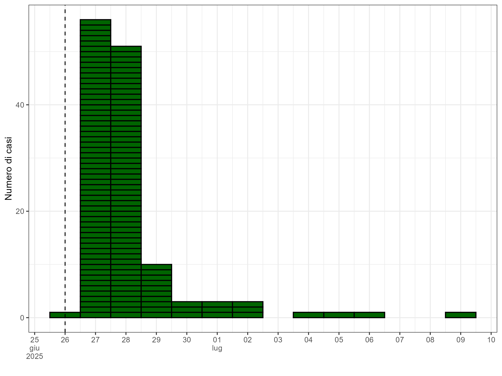
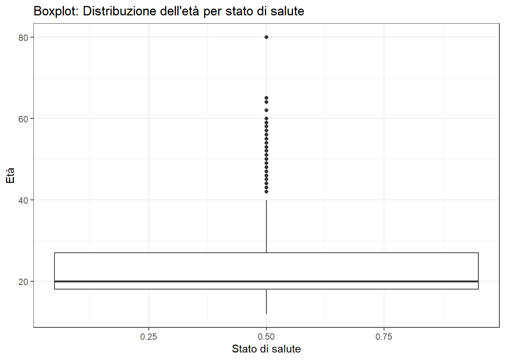
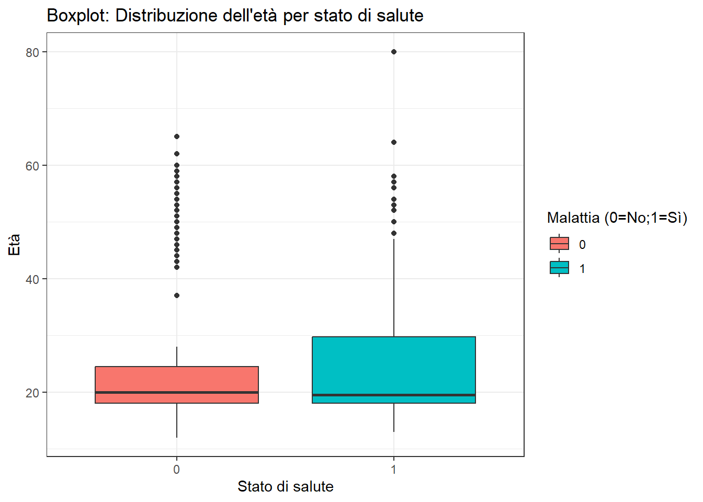
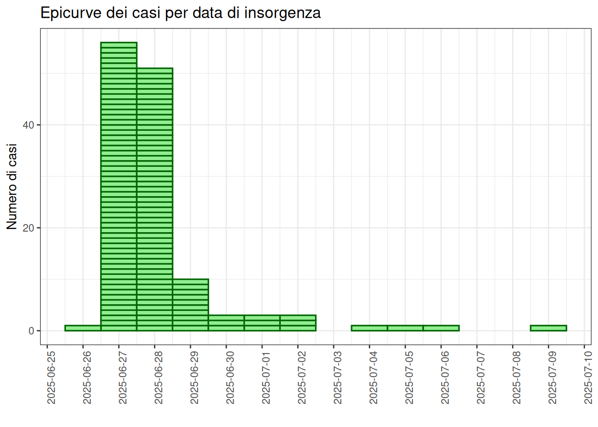

## Programmi Statistici - MEPI
## Autore: Alberto Mateo Urdiales
## Obiettivo: Indagine epidemiologica su focolaio di gastroenterita UNISR
## Contatto: alberto.mateourdiales@iss.it
## Data ultimo aggiornamento: 21 marzo 2025
pacman::p_load(
rio, # per importare i dataset
skimr, # per esplorare i dati
janitor, # un pacchetto per la pulizia dei dati
gtsummary, # per creare tabelle di frequenza
ggsurveillance, # per la curva epidemica
rstatix, # per generare statistiche riassuntive
epitools, # per l'analisi univariata
epikit, # per creare categorie di età
EpiStats, # per l'analisi univariata e stratificata
tidyverse # gestione dei dati e visualizzazione
)
Master II livello Epidemiologia - Programmi Statistici
Sessione 5 - Analisi descrittiva stratificata e sviluppo d’ipotesi:
Obiettivi di questa sesione
conoscere ed essere in grado di eseguire i passaggi fondamentali di un’analisi statistica descrittiva
essere in grado di eseguire analisi statistiche univariate
essere in grado di condurre un’analisi stratificata rispetto a potenziali fattori di rischio e fattori confondenti/modificatori di effetto
Scenario, disegno dello studio e piano di analisi
Introduzione
Il 26 giugno 2025, la Università Vita-Salute San Raffaele ha celebrato la festa del finale della prima edizione del suo Master di II livello in epidemiologia, a cui erano attesi dai 250 ai 350 partecipanti. Tra i partecipanti c’erano gli studenti di quella università, le loro famiglie e amici, insegnanti, studenti di medicina e alcuni laureati di una università vicina.
Un buffet self-service per la festa è stato fornito da un catering commerciale di Milano. Il cibo è stato preparato il giorno della festa e trasportato in un furgone refrigerato alla scuola.
I festeggiamenti sono iniziati con una cena a buffet aperta dalle 20:30 in poi e sono stati seguiti da un buffet di dessert offerto dalle 22:00. La festa e il buffet si sono protratti fino a tarda notte e le bevande alcoliche sono state molto apprezzate. Tutti hanno convenuto che si trattava di una festa da ricordare.
L’allarme
Il 2 luglio 2025, l’ATS di Milano ha segnalato al Servizio di Epidemiologia della Regione Lombardia e all’ISS di Roma la notifica di numerosi casi di gastroenterite in seguito alla festa di laurea sopra descritta. Sono stati sospettati più di 100 casi tra i partecipanti e alcuni di loro sono stati ricoverati in ospedali vicini. I malati hanno sofferto di febbre, nausea, diarrea e vomito che sono durati diversi giorni. La maggior parte ha ritenuto che il tiramisù consumato a cena fosse responsabile della loro malattia. La Salmonella Enteritidis è stata isolata da 19 campioni di feci.
L’ATS di Milano ha inviato un team per esaminare le strutture della cucina del catering. Sono state esaminate le procedure di preparazione del cibo. I campioni di cibo, ad eccezione del tiramisù (non è rimasto nulla), sono stati inviati al laboratorio regionale di riferimento.
L’ATS di Milano, con il supporto regionale e dell’ISS ha cominciato l’indagine per valutare l’entità dell’epidemia e identificare potenziali veicoli e fattori di rischio per la trasmissione, al fine di controllare meglio il focolaio.
Lo studio
I casi sono stati definiti come qualsiasi persona che avesse partecipato alla festa e che avesse sofferto di diarrea (≥ 3 feci liquide o semi-formate in 24 ore) tra il 27 giugno e il 29 giugno 2025; o che avesse sofferto di almeno tre dei seguenti sintomi: vomito, febbre ≥38,5°C, nausea, dolore addominale e mal di testa.
Agli studenti di entrambe università che hanno partecipato alla festa è stato chiesto tramite interviste telefoniche di fornire i nomi delle persone che hanno partecipato alla festa.
In totale, 291 hanno risposto al questionario e sono stati identificati 103 casi (tasso di attacco: 35%). Tra questi casi, 84 (82%) hanno ricevuto cure mediche e quattro sono stati ricoverati in ospedale. I tassi di attacco per fascia d’età erano del 36,6% per le persone <20 anni, del 32,1% per le persone dai 20 ai 29 anni e del 36,8% per le persone di età superiore ai 29 anni.

Utilizzando l’elenco aggiornato dei partecipanti, si vuole fare uno studio di coorte retrospettivo includendo tutti i partecipanti alla festa. I partecipanti che hanno risposto alla chiamata hanno ricevuto un questionario standard che chiedeva informazioni demografiche, segni, sintomi e durata, ricovero in ospedale e consumo di cibo e bevande alla festa, inclusa la quantità consumata. Sono stati calcolati tassi di attacco specifici per cibo per oltre 50 alimenti e bevande.
Lo studio dovrà seguire questi passaggi:
Eseguire la pulizia dei dati
- Per ciascuna variabile, esaminare l’intervallo, i valori inattesi e mancanti.
Descrivere ogni variabile
Per ogni variabile, descrivere le distribuzioni di frequenza, inclusi i valori mancanti e, se necessario, medie, mediana, mode, quartili, deviazione standard, valori anomali
Creare istogrammi e box plot se appropriato
Scegliere le caratteristiche rilevanti per descrivere la popolazione
Identificare la fonte del focolaio, se presente
Calcolare i tassi di attacco specifici per alimento
Esaminare le proporzioni di casi esposti
Scegliere la misura di associazione appropriata
Scegliere i test statistici appropriati e il livello di significatività
Calcolare le percentuali di casi esposti a ciascuna esposizione
Cercare qualsiasi relazione dose-risposta, se appropriato
Interpretare i risultati
Eseguire un’analisi stratificata
Identificare le variabili che sono potenziali modificatori dell’effetto (EM) e fattori confondenti
Progettare tabelle di stratificazione appropriate
Stratificare su ciascun livello assunto dall’EM e dai fattori confondenti
Calcolare le misurazioni appropriate per identificare i fattori confondenti e la modifica dell’effetto
Condurre test statistici appropriati
Interpretare i risultati
Step 1: Set up
Compiti:
- Scaricare la cartella tiramisu_unisr ed estrarre i contenuti
- Crea un progetto di RStudio dentro la cartella tiramisu_unisr
- Crea uno script di R, assicurati di includere all’inizio dello script nome e cognome; obiettivo dello script; tua email e la data.
- Comincia per istallare e caricare questi pachetti: rio, skimr, janitor, gtsummary,ggsurveillance, rstatix, epitools, epiR, epikit, EpiStats and tidyverse
Clicca per vedere la soluzione (provaci da solo prima!)
Step 2: Leggere ed esplorare i dati
2.1: Leggere i dati
Compiti
- Importa il database chiamato tiramisu_unisr.txt dentro della sottocarella “data”.
Clicca per vedere la soluzione (provaci da solo prima!)
# Importare il dataset
tira_grezzo <- import("data/tiramisu_unisr.txt") 2.2: Esplorare i dati
Compito: Esplora i dati cercando di rispondere a queste domande:
Clicca per leggere un suggerimento
Un modo efficiente per esplorare i dati è usare la funzione skim() dal pacchetto {skimr}, poiché fornisce tutte le informazioni necessarie con un solo comando. Naturalmente, ci sono diverse alternative. Puoi anche dare un’occhiata a glimpse() da {dplyr}, ad esempio. Un modo semplice per esplorare singole variabili che hanno categorie è usare tabyl() da {janitor}
Clicca per vedere la soluzione (provaci da solo prima!)
# Ispezionare il dataset e generare statistiche di base usando la funzione skim
skim(tira_grezzo)| Name | tira_grezzo |
| Number of rows | 291 |
| Number of columns | 21 |
| _______________________ | |
| Column type frequency: | |
| character | 1 |
| Date | 1 |
| numeric | 19 |
| ________________________ | |
| Group variables | None |
Variable type: character
| skim_variable | n_missing | complete_rate | min | max | empty | n_unique | whitespace |
|---|---|---|---|---|---|---|---|
| sex | 0 | 1 | 5 | 7 | 0 | 2 | 0 |
Variable type: Date
| skim_variable | n_missing | complete_rate | min | max | median | n_unique |
|---|---|---|---|---|---|---|
| dateonset | 160 | 0.45 | 2025-06-26 | 2025-07-09 | 2025-06-28 | 11 |
Variable type: numeric
| skim_variable | n_missing | complete_rate | mean | sd | p0 | p25 | p50 | p75 | p100 | hist |
|---|---|---|---|---|---|---|---|---|---|---|
| ill | 0 | 1.00 | 0.35 | 0.48 | 0 | 0.0 | 0 | 1.0 | 1 | ▇▁▁▁▅ |
| age | 8 | 0.97 | 26.66 | 14.33 | 12 | 18.0 | 20 | 27.0 | 80 | ▇▁▂▁▁ |
| tira | 5 | 0.98 | 0.42 | 0.49 | 0 | 0.0 | 0 | 1.0 | 1 | ▇▁▁▁▆ |
| tportion | 5 | 0.98 | 0.67 | 0.90 | 0 | 0.0 | 0 | 1.0 | 3 | ▇▃▁▂▁ |
| wmousse | 14 | 0.95 | 0.26 | 0.44 | 0 | 0.0 | 0 | 1.0 | 1 | ▇▁▁▁▃ |
| dmousse | 4 | 0.99 | 0.39 | 0.49 | 0 | 0.0 | 0 | 1.0 | 1 | ▇▁▁▁▅ |
| mousse | 2 | 0.99 | 0.43 | 0.50 | 0 | 0.0 | 0 | 1.0 | 1 | ▇▁▁▁▆ |
| mportion | 12 | 0.96 | 0.65 | 0.90 | 0 | 0.0 | 0 | 1.0 | 3 | ▇▂▁▂▁ |
| beer | 20 | 0.93 | 0.39 | 0.49 | 0 | 0.0 | 0 | 1.0 | 1 | ▇▁▁▁▅ |
| uniquekey | 0 | 1.00 | 146.00 | 84.15 | 1 | 73.5 | 146 | 218.5 | 291 | ▇▇▇▇▇ |
| redjelly | 0 | 1.00 | 0.27 | 0.45 | 0 | 0.0 | 0 | 1.0 | 1 | ▇▁▁▁▃ |
| fruitsalad | 0 | 1.00 | 0.24 | 0.43 | 0 | 0.0 | 0 | 0.0 | 1 | ▇▁▁▁▂ |
| tomato | 0 | 1.00 | 0.29 | 0.45 | 0 | 0.0 | 0 | 1.0 | 1 | ▇▁▁▁▃ |
| mince | 0 | 1.00 | 0.30 | 0.46 | 0 | 0.0 | 0 | 1.0 | 1 | ▇▁▁▁▃ |
| salmon | 0 | 1.00 | 0.48 | 1.12 | 0 | 0.0 | 0 | 1.0 | 9 | ▇▁▁▁▁ |
| horseradish | 0 | 1.00 | 0.31 | 0.84 | 0 | 0.0 | 0 | 1.0 | 9 | ▇▁▁▁▁ |
| chickenwin | 0 | 1.00 | 0.29 | 0.45 | 0 | 0.0 | 0 | 1.0 | 1 | ▇▁▁▁▃ |
| roastbeef | 0 | 1.00 | 0.10 | 0.30 | 0 | 0.0 | 0 | 0.0 | 1 | ▇▁▁▁▁ |
| pork | 0 | 1.00 | 0.47 | 0.86 | 0 | 0.0 | 0 | 1.0 | 9 | ▇▁▁▁▁ |
# Glimpse è un'alternativa a skim che fornisce informazioni più accurate sulla natura delle variabili
glimpse(tira_grezzo)Rows: 291
Columns: 21
$ ill <int> 1, 1, 1, 1, 1, 1, 1, 1, 1, 1, 1, 1, 1, 1, 1, 1, 1, 1, 1, 1…
$ dateonset <IDate> 2025-06-27, 2025-06-27, 2025-06-27, 2025-06-27, 2025-06-…
$ sex <chr> "males", "females", "males", "females", "males", "females"…
$ age <int> 18, 57, 56, 17, 19, 16, 19, 19, 40, 53, 20, 23, 17, 19, 15…
$ tira <int> 1, 1, 0, 1, 1, 1, 1, 1, 1, 1, 1, 1, 1, 1, 1, 1, 1, 1, 1, 1…
$ tportion <int> 3, 1, 0, 1, 2, 2, 3, 2, 2, 1, 3, 2, 1, 1, 1, 2, 1, 2, 2, 2…
$ wmousse <int> 0, 0, 0, 1, 0, 1, 0, 1, 1, 1, 1, 1, 0, 0, 1, 0, 0, 1, 0, 0…
$ dmousse <int> 1, 1, 0, 0, 0, 1, 1, 1, 1, 1, 1, NA, 1, 0, 1, 0, 1, 1, 1, …
$ mousse <int> 1, 1, 0, 1, 0, 1, 1, 1, 1, 1, 1, 1, 1, 0, 1, 0, 1, 1, 1, 0…
$ mportion <int> 1, 1, 0, NA, 0, 1, 1, 1, 2, 1, 3, 1, 1, 0, 2, 0, 1, 2, 2, …
$ beer <int> 0, 0, 0, 0, 1, 0, 0, 0, 1, 0, 1, 0, 1, 0, 0, 0, 0, 0, NA, …
$ uniquekey <int> 210, 12, 288, 186, 20, 148, 201, 106, 272, 50, 216, 141, 9…
$ redjelly <int> 0, 0, 0, 1, 0, 0, 0, 1, 0, 1, 1, 1, 1, 0, 0, 1, 1, 0, 1, 1…
$ fruitsalad <int> 0, 1, 0, 0, 0, 1, 1, 1, 0, 0, 1, 1, 0, 0, 1, 1, 1, 0, 0, 1…
$ tomato <int> 0, 0, 1, 0, 0, 0, 0, 0, 1, 0, 1, 0, 1, 0, 1, 0, 0, 0, 1, 0…
$ mince <int> 0, 1, 1, 0, 0, 1, 0, 0, 0, 0, 0, 1, 1, 0, 0, 0, 1, 0, 0, 0…
$ salmon <int> 0, 1, 1, 9, 0, 1, 0, 0, 1, 1, 1, 0, 0, 0, 0, 1, 1, 0, 1, 0…
$ horseradish <int> 0, 1, 0, 0, 0, 0, 0, 1, 0, 1, 1, 1, 0, 0, 0, 1, 0, 0, 0, 0…
$ chickenwin <int> 0, 0, 0, 0, 0, 1, 0, 1, 0, 1, 0, 0, 1, 0, 0, 0, 0, 0, 1, 0…
$ roastbeef <int> 0, 0, 0, 0, 0, 0, 0, 0, 1, 0, 0, 0, 0, 0, 0, 0, 0, 0, 0, 0…
$ pork <int> 1, 0, 0, 9, 0, 0, 0, 0, 0, 0, 1, 1, 1, 1, 1, 0, 1, 0, 1, 0…# Per vedere le diverse categorie delle variabili
tabyl(tira_grezzo, tomato)| tomato | n | percent |
|---|---|---|
| 0 | 208 | 0.7147766 |
| 1 | 83 | 0.2852234 |
2.3: Esplorare ‘age’ in modo più dettagliato
Compito Esplora l’età dei partecipanti (colonna ‘age’) per:
Ottenere statistiche riassuntive
Generare un boxplot dell’età in base allo stato di malattia.
Clicca per leggere un suggerimento
Puoi creare un boxplot con {ggplot2} usando la geom geom_boxplot(). Per creare due box, uno per ogni stato di malattia, puoi assegnare nell’estetica la colonna ill sia all’asse x che al riempimento. Non preoccuparti se non ti sembra bello… dovrebbe essere come la soluzione riportata sotto. Se hai bisogno di un ripasso su come funziona ggplot, dai un’occhiata al Capitolo dell’EpiRhandbook
Clicca per vedere la soluzione (provaci da solo prima!)
## Generare statistiche riassuntive
summary(tira_grezzo$age) Min. 1st Qu. Median Mean 3rd Qu. Max. NAs
12.00 18.00 20.00 26.66 27.00 80.00 8 ### Creare un boxplot dell'età per stato di salute
boxplot_eta <- tira_grezzo %>%
ggplot(mapping = aes(x = ill,
y = age,
fill = ill)) +
geom_boxplot() +
labs(
title = "Boxplot: Distribuzione dell'età per stato di salute",
x = "Stato di salute",
y = "Età",
fill = "Malattia (0=No;1=Sì)"
) +
theme_bw()
boxplot_etaWarning: Orientation is not uniquely specified when both the x and y aesthetics are
continuous. Picking default orientation 'x'.Warning: Continuous x aesthetic
ℹ did you forget `aes(group = ...)`?Warning: Removed 8 rows containing non-finite outside the scale range
(`stat_boxplot()`).Warning: The following aesthetics were dropped during statistical transformation: fill.
ℹ This can happen when ggplot fails to infer the correct grouping structure in
the data.
ℹ Did you forget to specify a `group` aesthetic or to convert a numerical
variable into a factor?
Non siamo riusciti a creare il boxplot che volevamo. Infatti, puoi vedere che è apparso un messaggio di avviso nella tua console che dice: “Did you forget to specify a group aesthetic or to convert a numerical variable into a factor?”
Sembra che tutte le colonne che consistono di valori 1 (presenti) e 0 (assenti) siano di classe ‘integer’, anche “ill”. Integer significa che sono considerati numeri. Tuttavia, noi vogliamo che siano categorie, altrimenti non saremo in grado di eseguire molte delle analisi che vogliamo (incluso questo boxplot). Quindi, ora risolveremo questo problema insieme ad altre operazioni di pulizia.
Step 3: Pulizia dei dati
3.1: Categorizza i valori “mancante” come NA
Abbiamo visto con skim() -e nel dizionario dei dati- che le variabili salmon, pork e horseradish hanno i valori ‘mancanti’ codificati con il numero ‘9’. Nella maggior parte delle analisi e visualizzazioni, è molto importante che R consideri i dati mancanti veramente come “mancanti”. Per fare ciò, i dati mancanti devono essere codificati come NA (senza virgolette). Altre codifiche dei dati mancanti, come spazi vuoti o il numero 9 (come in questo caso) significheranno che R tratterà questi dati come una categoria o un numero. Per R, 9 non è diverso dal numero 1.
Compiti
Comincia un commando di pulizia che crei tira_pul a partire da tira_grezzo
In questo comando, ricodifica le colonne salmon, pork e horseradish in modo che i valori di 9 siano codificati come
NA.
Clicca per leggere un suggerimento
Per questo compito puoi usare la funzione mutate() in combinazione con case_match() o if_else(). La prima è usata specificamente per la ricodifica, mentre la seconda è usata per creare/modificare colonne in base a condizioni logiche. In ogni caso, funzioni come if_else() e case_match() potrebbero richiedere di specificare il tipo di NA (ad esempio, NA_character_, NA_real_, NA_integer_) per garantire che il vettore risultante mantenga un tipo di dati coerente. Questo è importante perché R è fortemente tipizzato, il che significa che ogni vettore deve contenere elementi dello stesso tipo. Se vuoi saperne di più sulla ricodifica, leggi la sezione EpiRhandbook su Recoding. Indipendentemente dall’approccio che scegli, aggiungilo al comando di pulizia che hai iniziato prima, in modo che il tuo codice sia ordinato.
Clicca per vedere la soluzione (provaci da solo prima!)
tira_pul <- tira_grezzo %>% # tira_pul sarà il nostro dataframe pulito dopo aver eseguito la pulizia su tira_grezzo
####3.1 Categorizzare i valori "mancanti" come NA
# questo cambierebbe una per una le colonne in variabili numeriche
mutate(salmon = case_match(salmon,
9 ~ NA_integer_,
.default = salmon)) %>%
# possiamo fare tutte le colonne contemporaneamente con across().
mutate(across(.cols = c(salmon, horseradish, pork),
.fns = ~ case_match(.x,
9 ~ NA_integer_,
.default = .x)))
# Verificare che le modifiche siano state effettuate con successo
tabyl(tira_pul, salmon)| salmon | n | percent | valid_percent |
|---|---|---|---|
| 0 | 183 | 0.6288660 | 0.6376307 |
| 1 | 104 | 0.3573883 | 0.3623693 |
| NA | 4 | 0.0137457 | NA |
tabyl(tira_pul, horseradish)| horseradish | n | percent | valid_percent |
|---|---|---|---|
| 0 | 217 | 0.7457045 | 0.7508651 |
| 1 | 72 | 0.2474227 | 0.2491349 |
| NA | 2 | 0.0068729 | NA |
tabyl(tira_pul, pork)| pork | n | percent | valid_percent |
|---|---|---|---|
| 0 | 169 | 0.5807560 | 0.5847751 |
| 1 | 120 | 0.4123711 | 0.4152249 |
| NA | 2 | 0.0068729 | NA |
3.2: Trasforma le variabili categoriche
Compito: Cambia tutte le variabili che sono codificate come presenza (1) / assenza (0) da “integer” a “character”. Fai lo stesso per le variabili che registrano il numero di porzioni mangiate.
Clicca per leggere un suggerimento
Puoi farlo uno alla volta, oppure puoi farlo tutto contemporaneamente usando la funzione across() da {dplyr}. Se non sei sicuro di come usare la funzione across(), leggi la sezione su Transform multiple columns dell’EpiRhandbook.
Clicca per vedere la soluzione (provaci da solo prima!)
tira_pul <- tira_grezzo %>% # tira_pul sarà il nostro dataframe pulito dopo aver eseguito la pulizia su tira_grezzo
####3.1 Categorizzare i valori "mancanti" come NA
# questo cambierebbe una per una le colonne in variabili numeriche
mutate(salmon = case_match(salmon,
9 ~ NA_integer_,
.default = salmon)) %>%
# possiamo fare tutte le colonne contemporaneamente con across().
mutate(across(.cols = c(salmon, horseradish, pork),
.fns = ~ case_match(.x,
9 ~ NA_integer_,
.default = .x))) %>%
####3.2 questo cambierebbe tutte le colonne di interesse in 'variabili character' con un solo comando
mutate(across(.cols = !c(uniquekey, dateonset, age), # con il punto esclamativo prima di c() stiamo dicendo a R che vogliamo tutte le colonne, eccetto quelle nella lista c(), trasformate in as.character
.fns = ~ as.character(.x)))
# Verificare che le modifiche siano state effettuate con successo
glimpse(tira_pul)Rows: 291
Columns: 21
$ ill <chr> "1", "1", "1", "1", "1", "1", "1", "1", "1", "1", "1", "1"…
$ dateonset <IDate> 2025-06-27, 2025-06-27, 2025-06-27, 2025-06-27, 2025-06-…
$ sex <chr> "males", "females", "males", "females", "males", "females"…
$ age <int> 18, 57, 56, 17, 19, 16, 19, 19, 40, 53, 20, 23, 17, 19, 15…
$ tira <chr> "1", "1", "0", "1", "1", "1", "1", "1", "1", "1", "1", "1"…
$ tportion <chr> "3", "1", "0", "1", "2", "2", "3", "2", "2", "1", "3", "2"…
$ wmousse <chr> "0", "0", "0", "1", "0", "1", "0", "1", "1", "1", "1", "1"…
$ dmousse <chr> "1", "1", "0", "0", "0", "1", "1", "1", "1", "1", "1", NA,…
$ mousse <chr> "1", "1", "0", "1", "0", "1", "1", "1", "1", "1", "1", "1"…
$ mportion <chr> "1", "1", "0", NA, "0", "1", "1", "1", "2", "1", "3", "1",…
$ beer <chr> "0", "0", "0", "0", "1", "0", "0", "0", "1", "0", "1", "0"…
$ uniquekey <int> 210, 12, 288, 186, 20, 148, 201, 106, 272, 50, 216, 141, 9…
$ redjelly <chr> "0", "0", "0", "1", "0", "0", "0", "1", "0", "1", "1", "1"…
$ fruitsalad <chr> "0", "1", "0", "0", "0", "1", "1", "1", "0", "0", "1", "1"…
$ tomato <chr> "0", "0", "1", "0", "0", "0", "0", "0", "1", "0", "1", "0"…
$ mince <chr> "0", "1", "1", "0", "0", "1", "0", "0", "0", "0", "0", "1"…
$ salmon <chr> "0", "1", "1", NA, "0", "1", "0", "0", "1", "1", "1", "0",…
$ horseradish <chr> "0", "1", "0", "0", "0", "0", "0", "1", "0", "1", "1", "1"…
$ chickenwin <chr> "0", "0", "0", "0", "0", "1", "0", "1", "0", "1", "0", "0"…
$ roastbeef <chr> "0", "0", "0", "0", "0", "0", "0", "0", "1", "0", "0", "0"…
$ pork <chr> "1", "0", "0", NA, "0", "0", "0", "0", "0", "0", "1", "1",…3.3: Ricategorizzare le porzioni di mousse e tiramisù
Abbiamo visto che ci sono due colonne -tportion e mportion- che hanno quattro categorie in base al numero di porzioni mangiate. Tuttavia, esplorando queste colonne possiamo vedere che poche persone hanno mangiato 3 porzioni. Il numero basso in questa categoria significa che sarà molto difficile avere risultati significativi a causa dell’ampia incertezza che troveremo nelle stime.
Compito: Ricategorizzare queste colonne in modo che abbiano tre categorie: 0, 1 e 2+ porzioni mangiate. Aggiungere il nuovo codice alla pipeline di pulizia avviata in precedenza.
Clicca per leggere un suggerimento
Ora useremo la funzione mutate() in combinazione con if_else(). Come specificato sopra, questa funzione viene utilizzata per una semplice ricodifica logica, che è ciò che vogliamo fare ora. Ci sono tre funzioni “partner” chiamate if_else() da {dplyr}, ifelse() da {base} e fifelse() da {data.table}. Hanno tutte la stessa sintassi. ifelse() ha il vantaggio di essere incorporato in R, il che ne garantisce stabilità e sostenibilità. if_else() ha alcuni vantaggi rispetto a ifelse() che sono importanti nell’analisi epi. Ad esempio, non converte gli oggetti Date in numerici e verifica che entrambe le alternative nelle istruzioni if ed else siano della stessa classe. Infine, fifelse() è la più veloce, quindi ha i suoi vantaggi quando analizziamo un database di grandi dimensioni.
Se vuoi saperne di più sulla semplice ricodifica logica, dai un’occhiata a questa sezione dell’EpiRhandbook.
Clicca per vedere la soluzione (provaci da solo prima!)
tira_pul <- tira_grezzo %>% # tira_pul sarà il nostro dataframe pulito dopo aver eseguito la pulizia su tira_grezzo
####3.1 Categorizzare i valori "mancanti" come NA
# questo cambierebbe una per una le colonne in variabili numeriche
mutate(salmon = case_match(salmon,
9 ~ NA_integer_,
.default = salmon)) %>%
# possiamo fare tutte le colonne contemporaneamente con across().
mutate(across(.cols = c(salmon, horseradish, pork),
.fns = ~ case_match(.x,
9 ~ NA_integer_,
.default = .x))) %>%
####3.2 questo cambierebbe tutte le colonne di interesse in 'variabili character' con un solo comando
mutate(across(.cols = !c(uniquekey, dateonset, age), # con il punto esclamativo prima di c() stiamo dicendo a R che vogliamo tutte le colonne, eccetto quelle nella lista c(), trasformate in character
.fns = ~ as.character(.x))) %>%
####3.3 semplice ricodifica logica con if_else()
mutate(tportion2 = if_else(tportion == "2" | tportion == "3", "2+", tportion))%>%
mutate(mportion2 = if_else(mportion == "2" | mportion == "3", "2+", mportion))
# Verificare che le modifiche siano state effettuate con successo
tabyl(tira_pul, tportion2)| tportion2 | n | percent | valid_percent |
|---|---|---|---|
| 0 | 165 | 0.5670103 | 0.5769231 |
| 1 | 65 | 0.2233677 | 0.2272727 |
| 2+ | 56 | 0.1924399 | 0.1958042 |
| NA | 5 | 0.0171821 | NA |
tabyl(tira_pul, mportion2)| mportion2 | n | percent | valid_percent |
|---|---|---|---|
| 0 | 166 | 0.5704467 | 0.5949821 |
| 1 | 55 | 0.1890034 | 0.1971326 |
| 2+ | 58 | 0.1993127 | 0.2078853 |
| NA | 12 | 0.0412371 | NA |
3.4: Crea fasce d’età
Compito: Crea una nuova variabile con due categorie (quelli di età < mediana dell’età e quelli >=mediana dell’età). Aggiungi il codice per creare questa nuova variabile al comando di pulizia creato sopra per assicurarti che il tuo codice sia ordinato. Non scrivere più comandi di pulizia
Clicca per leggere un suggerimento
Puoi creare la colonna delle fasce d’etè con la funzione age_categories() da {epikit}. Se non hai familiarità con questa funzione, prova a cercare nella Help come funziona, oppure leggi la questa Sezione dell’EpiRhandbook.
Clicca per vedere la soluzione (provaci da solo prima!)
tira_pul <- tira_grezzo %>% # tira_pul sarà il nostro dataframe pulito dopo aver eseguito la pulizia su tira_grezzo
####3.1 Categorizzare i valori "mancanti" come NA
# questo cambierebbe una per una le colonne in variabili numeriche
mutate(salmon = case_match(salmon,
9 ~ NA_integer_,
.default = salmon)) %>%
# possiamo fare tutte le colonne contemporaneamente con across().
mutate(across(.cols = c(salmon, horseradish, pork),
.fns = ~ case_match(.x,
9 ~ NA_integer_,
.default = .x))) %>%
####3.2 questo cambierebbe tutte le colonne di interesse in 'variabili character' con un solo comando
mutate(across(.cols = !c(uniquekey, dateonset, age), # con il punto esclamativo prima di c() stiamo dicendo a R che vogliamo tutte le colonne, eccetto quelle nella lista c(), trasformate in character
.fns = ~ as.character(.x))) %>%
####3.3 semplice ricodifica logica con if_else()
mutate(tportion2 = if_else(tportion == "2" | tportion == "3", "2+", tportion))%>%
mutate(mportion2 = if_else(mportion == "2" | mportion == "3", "2+", mportion)) %>%
####3.4. creare fasce d'età
mutate(fascia_eta = epikit::age_categories(age, # la colonna da usare per creare le categorie
lower = 0, # il valore inferiore
upper = 20, # il valore superiore (vogliamo un gruppo di 20+)
by = 20)) # poiché vogliamo solo due gruppi, anche questo è 20
# Verificare che le modifiche siano state effettuate con successo
tabyl(tira_pul, fascia_eta)| fascia_eta | n | percent | valid_percent |
|---|---|---|---|
| 0-19 | 137 | 0.4707904 | 0.4840989 |
| 20+ | 146 | 0.5017182 | 0.5159011 |
| NA | 8 | 0.0274914 | NA |
3.5: Ricrea il boxplot
Compito: Ricrea il boxplot che abbiamo provato in 2.3 usando la versione pulita dei dati. Salva il boxplot nella sottocartella “outputs”.
Clicca per vedere la soluzione (provaci da solo prima!)
#### 3.5 Boxplot dell'età in base allo stato di malattia
boxplot_eta <- tira_pul %>%
ggplot(mapping = aes(x = ill,
y = age,
fill = ill)) +
geom_boxplot() +
labs(
title = "Boxplot: Distribuzione dell'età per stato di salute",
x = "Stato di salute",
y = "Età",
fill = "Malattia (0=No;1=Sì)"
) +
theme_bw()
boxplot_eta
### Salvare il boxplot
#### Un modo statico per salvarlo
ggsave(filename = "outputs/boxplot_eta.png", plot = boxplot_eta, width = 8, height = 6)
#### Un modo dinamico per farlo in modo che contenga la data dell'analisi
ggsave(filename = str_glue("outputs/boxplot_eta_", # Prima scriviamo l'inizio del nome del file fino alla data
str_replace_all(Sys.Date(), "-", ""), # Sys.Date() ci dà la data dell'analisi. Str_replace_all() rimuove tutti i trattini
".png"), # Infine aggiungiamo l'estensione che è il tipo di file
plot = boxplot_eta, width = 8, height = 6)3.6: Esporta i dati puliti
Compito: Esporta la versione pulita del set di dati come file csv e salvala nella cartella “outputs”.
Clicca per vedere la soluzione (provaci da solo prima!)
# esportare il dataset
export(tira_pul, "outputs/tira_pul.csv", row.names = F)Step 4: Analisi descrittiva
Ora che abbiamo esplorato e pulito i nostri dati, possiamo iniziare con l’analisi descrittiva. Come sapete, normalmente descriviamo i dati in base a tempo, persona e luogo. Non faremo l’analisi per “luogo” perché in questa epidemia, quell’elemento non è rilevante.
4.2: Analisi in base al tempo
Compito: Crea una curva epidemica con le date di insorgenza. Mostra sull’asse x ogni giorno del periodo di studio.
Clicca per leggere un suggerimento
Dovresti essere in grado, a questo punto, di creare l’istogramma richiesto per questa epicurva. Puoi usare geom_histrogram() come abbiamo usato la lezione precedente, ma puoi anche provarci con geom_epicurve(),dal pachetto {ggsurveillance} che è stato creato apposta per creare curve epidemiche. Se usi geom_epicurve() puoi specificare all’interno con l’argomento day_resolution = che vuoi la curva epidemica per giorno (day). Se hai difficoltà, dai un’occhiata al capitolo Epicurves dell’EpiRhandbook.
Clicca per vedere la soluzione (provaci da solo prima!)
tira_pul %>%
ggplot(mapping = aes(x = dateonset)) +
geom_epicurve(date_resolution = "day", color = "darkgreen", fill = "lightgreen" ) +
scale_x_date(date_breaks = "day") + # vogliamo che ogni giorno sia mostrato sull'asse x
labs(
title = "Epicurve dei casi per data di insorgenza",
y = "Numero di casi",
x = "" # lasciamo il titolo dell'asse x vuoto perché abbiamo già detto nel titolo che è la data di insorgenza
) +
theme_bw() + # tema predefinito
theme(axis.text.x = element_text(angle = 90)) # cambiamo l'angolo dei giorni sull'asse x in modo che sia leggibile. Importante che questo avvenga alla fine
4.3: Analisi per persona
Compito: Genera una tabella descrittiva dell’età e il sesso dei partecipanti per stato di malattia
Clicca per leggere un suggerimento
Esistono diversi approcci per generare tabelle descrittive e tabulazioni incrociate. Potresti usare tabyl() da {janitor}, che è un approccio molto veloce; oppure potresti usare group_by() in combinazione con summarise(), da {dplyr} che è il più flessibile. In questo caso, tuttavia, ti mostriamo la soluzione con un approccio molto efficiente: tbl_summary() da {gtsummary}
Clicca per vedere la soluzione (provaci da solo prima!)
tira_pul %>%
select(sex, fascia_eta, ill) %>% # selezioniamo le colonne di nostro interesse
tbl_summary(by = ill, percent = "row") | Characteristic | 0 N = 1881 |
1 N = 1031 |
|---|---|---|
| sex | ||
| females | 86 (62%) | 53 (38%) |
| males | 102 (67%) | 50 (33%) |
| fascia_eta | ||
| 0-19 | 87 (64%) | 50 (36%) |
| 20+ | 96 (66%) | 50 (34%) |
| Unknown | 5 | 3 |
| 1 n (%) | ||
Step 5: Sviluppare e testare dell’ipotesi
Nel passaggio precedente abbiamo descritto il numero di partecipanti malati in base alla data di insorgenza dei sintomi e abbiamo descritto come sesso ed età erano distribuiti in base allo stato di salute. Il passaggio successivo in un’indagine su un focolaio sarebbe quello di sviluppare e testare l’ipotesi sulla possibile fonte del focolaio.
5.1: Calcolare i tassi di attacco specifici per alimento e la % di casi esposti
Compito: Creare tabelle 2 per 2 con esposizione e risultato e calcolare i tassi di attacco.
Clicca per leggere un suggerimento
Si potrebbe usare lo stesso approccio usato prima con tbl_summary() da {gtsummary}.
Clicca per vedere la soluzione (provaci da solo prima!)
tira_pul %>%
select(tira, wmousse, dmousse, wmousse, beer,
redjelly, fruitsalad, tomato, mince, salmon,
horseradish, chickenwin, roastbeef, pork, ill) %>% # selezioniamo le colonne di nostro interesse
tbl_summary(by = ill, percent = "row") %>% # assegniamo la colonna di raggruppamento e definiamo che vogliamo le percentuali per riga
add_overall() # aggiungiamo i conteggi complessivi| Characteristic | Overall N = 2911 |
0 N = 1881 |
1 N = 1031 |
|---|---|---|---|
| tira | |||
| 0 | 165 (100%) | 158 (96%) | 7 (4.2%) |
| 1 | 121 (100%) | 27 (22%) | 94 (78%) |
| Unknown | 5 | 3 | 2 |
| wmousse | |||
| 0 | 205 (100%) | 156 (76%) | 49 (24%) |
| 1 | 72 (100%) | 23 (32%) | 49 (68%) |
| Unknown | 14 | 9 | 5 |
| dmousse | |||
| 0 | 174 (100%) | 148 (85%) | 26 (15%) |
| 1 | 113 (100%) | 37 (33%) | 76 (67%) |
| Unknown | 4 | 3 | 1 |
| beer | |||
| 0 | 165 (100%) | 96 (58%) | 69 (42%) |
| 1 | 106 (100%) | 76 (72%) | 30 (28%) |
| Unknown | 20 | 16 | 4 |
| redjelly | |||
| 0 | 212 (100%) | 154 (73%) | 58 (27%) |
| 1 | 79 (100%) | 34 (43%) | 45 (57%) |
| fruitsalad | |||
| 0 | 220 (100%) | 163 (74%) | 57 (26%) |
| 1 | 71 (100%) | 25 (35%) | 46 (65%) |
| tomato | |||
| 0 | 208 (100%) | 140 (67%) | 68 (33%) |
| 1 | 83 (100%) | 48 (58%) | 35 (42%) |
| mince | |||
| 0 | 204 (100%) | 133 (65%) | 71 (35%) |
| 1 | 87 (100%) | 55 (63%) | 32 (37%) |
| salmon | |||
| 0 | 183 (100%) | 120 (66%) | 63 (34%) |
| 1 | 104 (100%) | 67 (64%) | 37 (36%) |
| Unknown | 4 | 1 | 3 |
| horseradish | |||
| 0 | 217 (100%) | 145 (67%) | 72 (33%) |
| 1 | 72 (100%) | 42 (58%) | 30 (42%) |
| Unknown | 2 | 1 | 1 |
| chickenwin | |||
| 0 | 207 (100%) | 137 (66%) | 70 (34%) |
| 1 | 84 (100%) | 51 (61%) | 33 (39%) |
| roastbeef | |||
| 0 | 262 (100%) | 167 (64%) | 95 (36%) |
| 1 | 29 (100%) | 21 (72%) | 8 (28%) |
| pork | |||
| 0 | 169 (100%) | 115 (68%) | 54 (32%) |
| 1 | 120 (100%) | 72 (60%) | 48 (40%) |
| Unknown | 2 | 1 | 1 |
| 1 n (%) | |||
5.2: Stimare il rischio relativo delle diverse esposizioni
Abbiamo calcolato i tassi di attacco negli esposti e nei non esposti, il che ci fornisce già molte informazioni. Ad esempio, vediamo poche differenze nei tassi di attacco tra coloro che hanno mangiato e non hanno mangiato salmone; ma osserviamo un tasso di attacco molto più alto tra coloro che hanno mangiato tiramisù, rispetto a coloro che non l’hanno mangiato. Vediamo anche un tasso di attacco più alto in coloro che non hanno bevuto birra rispetto a coloro che l’hanno bevuta.
Per comprendere meglio le esposizioni, ora calcoleremo i rischi relativi.
Compito: Comincia per stimare il rischio relativo per l’esposizione a mousse bianca (wmousse) a cena
Clicca per leggere un suggerimento
Potresti farlo manualmente, o potresti usare una di tante funzioni, come per esempio riskratio() dal pacchetto {epitools}, che ti darà RR e 95%CI anche se hai >2 categorie di esposizione. In questa funzione, devi prima scrivere l’esposizione e poi l’esito.
La soluzione che noi proponiamo usa la funzione CS() dal pacchetto {EpiStats}. Proponiamo questa soluzione perché ci sembra la più semplice. Qua devi specificare prima il database, poi la variabile di esito e per ultimo la variabile di esposizione.
Clicca per vedere la soluzione (provaci da solo prima!)
# Usare CS() da EpiStats per estimare il rischio relativo di wmousse
CS(tira_pul, ill, wmousse)$df1
Cases Non Cases Total Risk
Exposed 49 23 72 0.68
Unexposed 49 156 205 0.24
Total 98 179 277 0.35
$df2
Point estimate 95%CI.ll 95%CI.ul
Risk difference 0.44 0.32 0.56
Risk ratio 2.85 2.13 3.81
Attr. frac. ex. 0.65 0.53 0.74
Attr. frac. pop 0.32 NA NA
chi2(1) 45.44 NA NA
Pr>chi2 0.000 NA NAVediamo come possiamo interpretare l’output di CS().
La prima parte $df1 è una tabella 2x2 di esposizione ed esito. L’ultima colonna Risk mostra il rischio tra quelli che hanno mangiato wmousse (Exposed), quelli che non hanno mangiato wmousse (Unexposed) e il Total. Questo Risk è lo stesso che l’incidenza cumualtiva e che il tasso di attacco nel contesto di un focolaio.
La seconda parte $df1 mostra:
Risk difference (Differenza di rischio): La differenza di rischio tra esposti e non esposti, calcolata come \(I_{exp} - I_{nexp}\) dove \(I_{exp}\) è l’incidenza in esposti e \(I_{nexp}\) è l’incidenza in non esposti. In questo caso sarebbe 0.68-0.24 = 0.44 (IC 95%: 0.32 - 0.56) indicando che gli esposti hanno un rischio maggiore del rispetto ai non esposti.
Risk ratio (Rischio relativo): Calcolato come \(I_{exp}/I_{nexp}\). In questo caso sarebbe 0.68/0.24 = 2.85 (IC 95%: 2.13 - 3.81) indicando che gli esposti hanno un rischio 2.85 volte maggiore di sviluppare l’outcome rispetto ai non esposti.
Attr. frac. ex. (Frazione attribuibile negli esposti): La percentuale di malattia tra i casi che è attribuibile alla esposizione. Calcolata come \((I_{exp} - I_{nexp})/I_{exp}\) . In questo caso: (0.68-0.24)/0.68 = 0.65 (IC 95%: 0.53 - 0.74). Indica che il 65% dei casi tra quelli che hanno mangiato wmousse è attribuibile al wmousse.
Attr. frac. pop (Frazione attribuibile nella popolazione): La percentuale di casi nella popolazione che è attribuibile alla esposizione. Calcolata come \((I_{pop} - I_{nexp})/I_{pop}\), dove \(I{pop}\) è l’indidenza nella popolazione totale. In questo caso: (0.35-0.24)/0.35 = 0.32. Indica che il 32% dei casi nella popolazione totale è attribuibile al wmousse.
chi2(1): Il valore del test chi-quadro. In questo caso 45.44, indicando una forte associazione tra wmousse e malattia.
Pr>chi2: Il valore p associato al test chi-quadro è 0.000, indicando che l’associazione è statisticamente significativa.
Compito: Calcola ora il rapporto di rischio per tutte le altre esposizioni per sviluppare l’ipotesi della possibile fonte
Clicca per leggere un suggerimento
Prova a usare la funzione CSTable() sempre da {EpiStats}.
Clicca per vedere la soluzione (provaci da solo prima!)
# Rischio relativo delle altre variabili con EpiStats::CSTable
# Creare un oggetto con tutte le variabili alimentari
variabili_cibo <- c("tira","wmousse",
"dmousse","beer","redjelly","fruitsalad",
"tomato","mince","salmon",
"horseradish", "chickenwin",
"roastbeef","pork")
# Creare una tabella per tutte le variabili alimentari insieme
CSTable(tira_pul, "ill", variabili_cibo)$df
Tot.Exp Cases.Exp AR.Exp% Tot.Unexp Cases.Unexp AR.Unexp% RR
tira 121 94 77.69 165 7 4.24 18.31
wmousse 72 49 68.06 205 49 23.90 2.85
dmousse 113 76 67.26 174 26 14.94 4.50
redjelly 79 45 56.96 212 58 27.36 2.08
fruitsalad 71 46 64.79 220 57 25.91 2.50
beer 106 30 28.30 165 69 41.82 0.68
tomato 83 35 42.17 208 68 32.69 1.29
pork 120 48 40.00 169 54 31.95 1.25
horseradish 72 30 41.67 217 72 33.18 1.26
roastbeef 29 8 27.59 262 95 36.26 0.76
chickenwin 84 33 39.29 207 70 33.82 1.16
mince 87 32 36.78 204 71 34.80 1.06
salmon 104 37 35.58 183 63 34.43 1.03
CI.ll CI.ul p(Chi2)
tira 8.81 38.04 0.000
wmousse 2.13 3.81 0.000
dmousse 3.09 6.56 0.000
redjelly 1.56 2.79 0.000
fruitsalad 1.89 3.31 0.000
beer 0.48 0.96 0.024
tomato 0.94 1.77 0.127
pork 0.92 1.71 0.158
horseradish 0.90 1.75 0.192
roastbeef 0.41 1.40 0.354
chickenwin 0.84 1.61 0.377
mince 0.76 1.48 0.747
salmon 0.75 1.43 0.844Diversi alimenti sembravano essere associati all’insorgenza di malattie; tiramisu, mousse al cioccolato fondente e bianco (dmousse e wmousse), macedonia (fruitsalada) e gelatina rossa (redjelly). Gli investigatori hanno deciso di identificare i rispettivi ruoli nell’insorgenza di malattie.
Dall’analisi grezza, gli epidemiologi hanno notato che l’insorgenza di gastroenterite era inferiore tra i partecipanti che avevano bevuto birra. Hanno anche deciso di valutare se la birra avesse un effetto protettivo sull’insorgenza di gastroenterite.
5.3: Analisi stratificata - Confondimento e modificazione dell’effetto
La scoperta che la birra ha avuto un effetto protettivo sulle malattie gastrointestinali è sorprendente. Uno dei tuoi colleghi ha suggerito che il tiramisù potrebbe confondere questa associazione. Dato che il tiramisù ha il più alto rischio relativo, potrebbe essere che il dessert sia associato all’esito (lo causi) e all’esposizione (chi beve birra potrebbe aver preferito non rovinarne il sapore aspro con la dolcezza del tiramisù). Un altro collega non è d’accordo e pensa che, in realtà, il tiramisù potrebbe essere un modificatore dell’effetto nella relazione tra birra e malattia.
DOMANDA: Come verificheresti se il tiramisù è un fattore di confondimento o un modificatore dell’effetto nell’associazione tra birra e malattia?
Clicca per vedere la soluzione (provaci da solo prima!)
Per verificare entrambe le cose: confondimento e modificazione dell’effetto, dovremmo stratificare i nostri dati in base al consumo di tiramisù. Una volta stratificati, possiamo calcolare i rischi relativi in entrambi gli strati e un rischio relativo aggiustato: il rapporto di rischio di Mantel-Haenszel aggiustato. Se questo rischio è molto diverso dal rischio grezzo (rischio relativo complessivo tra birra e malattia), potremmo dire che il tiramisù confonde l’associazione tra birra e malattia. Normalmente definiamo “molto diverso” quando: \((RRgrezzo/RRaggiustato - 1)*100\) è maggiore del 10-20% di differenza (nessuna soglia rigorosa, la tua interpretazione e competenza contano!).
Se c’è confondimento ma nessuna modificazione dell’effetto, il RR M-H aggiustato dovrebbe essere diverso dal RR grezzo, ma i rischi in ogni strato -tiramisù sì e tiramisù no- non dovrebbero essere diversi. Se sono diversi allora c’è modificazione dell’effetto. Come facciamo a sapere se sono diversi? Possiamo eseguire un test per verificarlo, chiamato test di omogeneità di Mantel-Haenszel.
Compito: controlla se il tiramisù è un fattore confondente o un modificatore di effetto nell’associazione tra birra e malattia
Clicca per leggere un suggerimento
Prova a fare questo Compito con la funzione CSinter() dal pacchetto {EpiStats}. Leggi la documentazione della funzione.
Clicca per vedere la soluzione (provaci da solo prima!)
# Stratificare per tiramisù; esposizione = birra
tira_beer <- csinter(x = tira_pul,
cases = "ill",
exposure = "beer",
by = "tira")
tira_beer$df1
CSInter ill - beer by(tira) Total Cases Risk % P.est. Stats 95%CI.ll
1 tira = 1 116 <NA> NA Risk difference -0.18 -0.35
2 Exposed 41 27 65.85 Risk ratio 0.78 0.62
3 Unexposed 75 63 84.00 Prev. frac. ex. 0.22 0.00
4 NA <NA> NA Prev. frac. pop 0.08 NA
5 tira = 0 150 <NA> NA Risk difference 0.00 -0.07
6 Exposed 63 3 4.76 Risk Ratio 1.04 0.24
7 Unexposed 87 4 4.60 Attrib.risk.exp 0.03 -3.16
8 NA <NA> NA Attrib.risk.pop 0.01 NA
9 Missing / Missing % 25 8.6% NA <NA> NA NA
95%CI.ul
1 -0.01
2 1.00
3 0.38
4 NA
5 0.07
6 4.47
7 0.78
8 NA
9 NA
$df2
Point Estimate Chi2 p.value Stats 95%CI.ll 95%CI.ul
1 Woolf test of homogeneity 0.14 0.713 NA NA NA
2 Crude RR for beer NA NA 0.70 0.49 0.99
3 MH RR beer adjusted for tira NA NA 0.80 0.62 1.03
4 Adjusted/crude relative change NA NA 14.93 NA NAHai ottenuto diversi risultati. Ora rivediamoli per capirli:
Per verificare se c’è confusione, dobbiamo valutare se i rapporti di rischio grezzo e aggiustato sono molto diversi. Abbiamo detto che possiamo farlo con la formula \((RRgrezzo/RRaggiustato - 1)*100\). Qui, questo risultato è nella sezione $df2 e corrisponde all’Adjusted/crude relative change che è 15%. Questo risultato è al limite, ma possiamo dire che il tiramisù non sta confondendo in modo massiccio l’associazione tra birra e malattia.
Per sapere se c’è una modifica dell’effetto, puoi controllare i due rapporti di rischio specifici dello strato. Poiché sono molto diversi (0,78 vs 1,04), possiamo concludere che c’è una modificazione dell’effetto del tiramisù sull’associazione tra birra e malattia. Ciò suggerisce che il consumo di birra ha ridotto l’effetto del tiramisù sulla gastroenterite.
Con quest’analisi siamo in grado d’ipotizzare che il tiramisù sia la fonte del focolaio, ma questa ipotesi va verificata con un’analisi multivariata che vederemo nelle prossime sessioni!
Informazioni del esercizio
Autori
Questo esercizio è satato adattato per Alberto Mateo Urdiales, ISS (alberto.mateourdiales@iss.it) da un Case-study EPIET/EUPHEM (ECDC). Questo Case study è stato inizialmente progettato da Alain Moren e Gilles Desve per EPIET. Si basa su un’indagine condotta da Anja Hauri, RKI, Berlino, 1998.
Fonte dei dati: I dati sono fittizi e sono stati ispirati da Nygren et al. Encefalite trasmessa da zecche: manifestazioni cliniche acute e gravità in 581 casi dalla Germania, 2018-2020. Journal of Infection. 2023 Apr 1;86(4):369-75